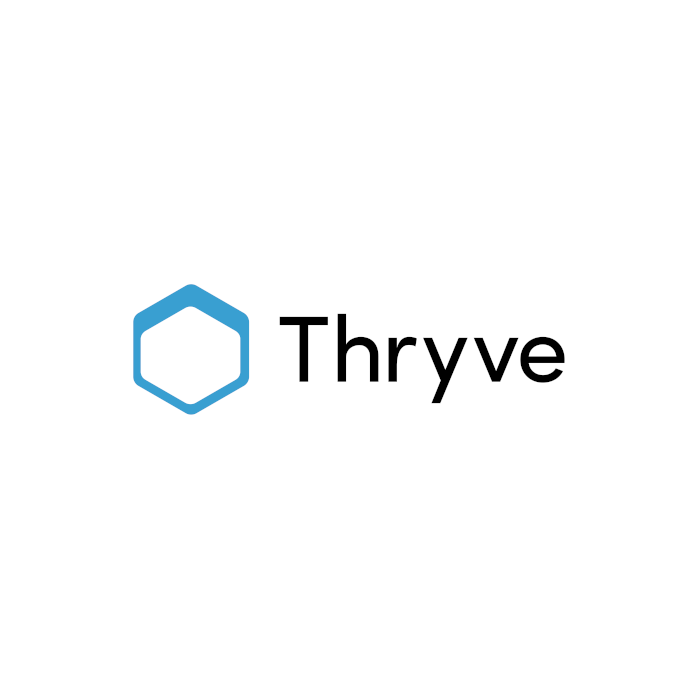
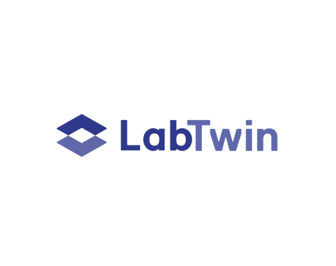

Portfolio & projects.
A selected collection of professional case studies and personal AI projects, products I led from discovery to production across health tech, lab intelligence, and developer tooling.
Products I led from discovery to production.

Health Data Platform · Product Owner
Thryve GmbH
Unified SDK for wearable data integration, scaled from launch to 1M+ users and €0→€1M ARR.

Voice AI for Labs · Technical PM
LabTwin GmbH
Led AI integration strategy for voice assistants and LLM-powered workflows across laboratory instrumentation.

Lab Intelligence Platform · Senior PM
Labforward GmbH
Owned the GenAI roadmap end-to-end, from LLM evaluation to production deployment of AI-powered experiment search.
Things I build on weekends when no one’s watching.
Open source · MCP server
Fast Project Docs MCP Server
Open-source MCP server that connects AI agents to a structured spec-generation workflow, enabling autonomous, context-aware project documentation.
Personal · LLM workflow automation
AI-Powered Automation Tools
Multi-LLM Python suite (OpenAI, Claude, Gemini), orchestrates agentic PM workflows to eliminate 12+ hrs/week of manual release notes, ticket creation, and API testing.
Open source · Multi-agent framework
AI Interview Prep Framework
Multi-agent Claude Code system, paste your CV once, name a company, and autonomous agents research it and generate stage-specific prep docs across a 5-stage pipeline.